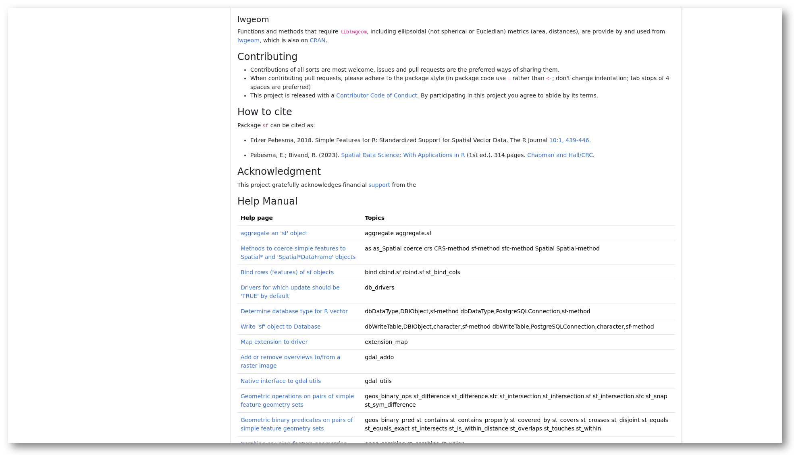

5 Individual package information
Clicking on a package in search results or in a universe overview will lead you to the homepage for that package. You can also link to this page directly via the url https://{owner}.r-universe.dev/{package}.
{kind=link}
{kind=link}
These package pages are generated automatically and provide detailed information about each project, and all the information and resources to quickly install and try the package locally in R.
5.1 Package information
The initial section of the homepage shows descriptive data and links to resources from this package, such as source/binary files, the package manual and NEWS file. Further down we show installation instructions to install the package in R. Installation is quick and easy because we provide pre-compiled binaries for Windows and MacOS, so no special tools or setup is required on the user machine.
Here you can also find more information derived by the build system, such as which system libraries the package builds on, topics, and if the package is on CRAN. The badges underneath show statistics about the package, such as dependencies, reverse dependencies, and GitHub stars. Clicking on the ’exports’ badge will show all functions and datasets exported by the package, which link to the respective sections in the manual page. If specified, we also show how the package should be cited in papers.
5.1.1 How are the dependencies / dependents calculated?
Both are calculated using transitive (recursive) strong dependencies, hence this includes both direct and indirect dependencies. Or in practical terms: other packages that need to be installed at minimum to be able to use the target package.
At package build time, we use tools::package_dependencies(pkg, recursive = TRUE) to derive the list of hard dependencies and store this in the database. R-base packages are not included. The dependencies value is simply the size of this list. The dependents value is the opposite: this is the number of packages in R-universe which list the target package as one of its dependencies.
5.1.2 How does R-universe analyze system dependencies (C/C++)
After the package has been installed, we use maketools to show external libraries that the package links to:
maketools::package_sysdeps("sf")
## shlib package headers source version
## 1 libproj.so.15.3.1 libproj15 libproj-dev proj 6.3.1-1
## 2 libgdal.so.26.0.4 libgdal26 libgdal-dev gdal 3.0.4+dfsg-1build3
## 3 libgeos_c.so.1.13.1 libgeos-c1v5 libgeos-dev geos 3.8.0-1build1
## 4 libstdc++.so.6.0.28 libstdc++6 <NA> gcc 10-20200411-0ubuntu1In a nutshell, maketools calls ldd on the installed R package to see which .so files are linked (the 1st column above). Then it uses the distro package manager (for instance dpkg) to query the runtime package deb that provides this file (the second column), and the corresponding headers and source packages. So to emphasize, this does not use heuristics / guessing based on the package description.
The maketools vignette explains this in more detail: Automatically determine run-time dependencies for R packages on Linux.
5.2 All the documentation
To let you start using packages as quickly as possible, R-universe renders all available documentation and presents this as clear and concisely as possible on the homepage.
{kind=link}

Most R packages have 3 forms of documentation: a README file, a reference manual (help pages), and a number of articles (vignettes). These articles are often a good place to get started, and are listed on the package homepage right under the descriptives. From here you can view both the rendered html/pdf document, as well as the rmarkdown source file used to (re)produce the article.
Further down the page you can see the content from the package README. Most packages these days include a README.md file which can nicely be rendered into HTML.
After the README follows a section named “reference manual” containing a table with all the help pages. These link to the respective chapters in the html reference manual, which provide the most extensive documentation for each function in the package, including descriptions, parameters, examples, etc.
5.2.1 cran.dev shortlinks
On R-universe you can find package repositories from many different organizations and maintainers. But sometimes you just want to lookup a particular CRAN package, without knowing the developer. The cran.dev shortlink service lets you navigate or link directly to the R-universe homepage and docs of any established CRAN package.
The root domain https://cran.dev/{package} redirects to the primary homepage for a package:
The subdomain https://docs.cran.dev/{package} redirects to package manual page:
Finally the subdomain https://api.cran.dev/{package} does not redirect, but returns a JSON blob with links to the package versions and resources. For example:
This shows the package page and maintainer for the gert package, and information on both the current CRAN release and development versions. Right now it returns:
{
"package": "gert",
"maintainer": "Jeroen Ooms <jeroen@berkeley.edu>",
"home": "https://ropensci.r-universe.dev/gert",
"release": {
"version": "1.9.2",
"date": "2023-06-30T08:43:26.000Z",
"source": "https://github.com/cran/gert",
"repository": "https://cloud.r-project.org",
"docs": "https://cran.r-universe.dev/gert/doc/manual.html",
"api": "https://cran.r-universe.dev/api/packages/gert"
},
"devel": {
"version": "1.9000",
"date": "2023-07-20T11:08:09.000Z",
"source": "https://github.com/r-lib/gert",
"repository": "https://ropensci.r-universe.dev",
"docs": "https://ropensci.r-universe.dev/gert/doc/manual.html",
"api": "https://ropensci.r-universe.dev/api/packages/gert"
}
}We can see the release and devel version of this package, with links to the respective sources, cranlike repository, manual, and package metadata.
From the above it can be seen that the gert R-universe page is https://ropensci.r-universe.dev/gert and the R-universe "repository" from where to install the devel version of gert:
# install 'devel' gert
install.packages("gert", repos = "https://ropensci.r-universe.dev")The "api" field shows the JSON url with all the information and metadata about this package:
# Everything there is to know about devel gert
gert <- jsonlite::fromJSON('https://ropensci.r-universe.dev/api/packages/gert')Note that not all packages have a devel version available. CRAN packages that are not found on GitHub or GitLab or R-forge only have a release version, for example: https://api.cran.dev/MASS
5.3 Usage and development activity
Besides familiarizing yourself with what the package does, you may be interested in who is working on it, who else is using it, and if it is still actively developed.
{kind=link}

The “development and contributors” section shows a bar chart with the number of commits per week for the last year, and who the main contributors are. Finally the section “usage by other packages” shows other packages on R-universe depending on this package, grouped by owner. This gives you some indication on how active the project is, and who are involved.